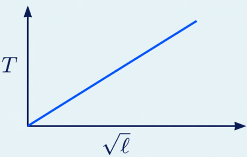

Physics
UNITS AND MEASUREMENT
MEASUREMENT AND UNITS
1Definition & Introduction
- Measurement is comparison of a physical quantity with an accepted reference standard (unit).
- A measurement result is written as numerical value accompanied by a unit.
- A physical quantity is any measurable property (e.g., length, mass, time, current).
- Base (fundamental) quantities are independent; their units are base units.
- Derived quantities depend on base quantities; their units are combinations of base units.
- A system of units is the complete set of base units and derived units used together (e.g., SI).
2Diagram
Measurement compares a physical quantity with a reference standard to give number × unit.
3Key Concepts
- ⚖️Unit is an arbitrarily chosen but internationally accepted standard for comparison.
- 🧱Only a limited set of base units is needed; all other units are derived from them.
- 🌐SI is the globally accepted system; it uses decimal prefixes for easy conversion.
- 🧩Examples of SI derived units: N = kg m s−2, J = kg m2 s−2.
4SI BASE QUANTITIES & BASE UNITS (NEED-TO-KNOW)
- Length: metre (m); mass: kilogram (kg); time: second (s).
- Electric current: ampere (A); thermodynamic temperature: kelvin (K).
- Amount of substance: mole (mol); luminous intensity: candela (cd).
- Plane angle (rad) and solid angle (sr) are SI units for angles and are dimensionless.
5DERIVED QUANTITIES & UNITS (HOW THEY ARE BUILT)
- Derived quantities are defined using base quantities (e.g., speed uses length and time).
- Derived units are obtained by combining base units (e.g., m s−1, kg m s−2).
- A system of units includes consistent base + derived units (CGS, FPS, MKS, SI).
- SI prefixes are powers of 10 used with units (e.g., km, μm) for convenient scaling.
6BASE vs DERIVED (QUANTITIES & UNITS)
| Basis | Base (Fundamental) | Derived |
|---|---|---|
| Meaning | Independent physical quantities | Defined from base quantities |
| Units | Base units (m, kg, s, A, K, mol, cd) | Combinations of base units |
| Example quantity | Length, mass, time | Speed, force, density |
| Example unit | m, kg, s | m s−1, N = kg m s−2 |
| Count (SI) | 7 base quantities | Unlimited |
7Solved Q&A
1
Why must every measurement be written with a unit?
Answer:
A numerical value alone does not specify the scale of the quantity.
The unit provides the reference standard used for comparison.
So the same number can represent different magnitudes in different units (e.g., 2 m vs 2 cm).
A numerical value alone does not specify the scale of the quantity.
The unit provides the reference standard used for comparison.
So the same number can represent different magnitudes in different units (e.g., 2 m vs 2 cm).
✓ Because the unit fixes the reference standard; without it, the number is meaningless.
2
A student says: “Force is a base quantity because it is important in mechanics.” Is this correct?
Answer:
Base quantities are chosen to be independent, not based on importance.
Force can be expressed using mass, length and time through its definition in mechanics.
Therefore force is derived, not fundamental.
Base quantities are chosen to be independent, not based on importance.
Force can be expressed using mass, length and time through its definition in mechanics.
Therefore force is derived, not fundamental.
✓ Incorrect. Force is a derived quantity; its unit reduces to kg m s−2.
8⭐Important Points
- A measurement is a comparison with an accepted standard (unit).
- Write measured values as number × unit; number alone is incomplete.
- SI has 7 base units: m, kg, s, A, K, mol, cd.
- All derived units must be expressible as combinations of SI base units.
- rad (plane angle) and sr (solid angle) are dimensionless in SI.
9❌Common Mistakes
- Writing a numerical answer without a unit (e.g., writing "5" instead of "5 m").
- Confusing base quantities with commonly used quantities (e.g., treating force as fundamental).
- Mixing unit systems without consistency (e.g., cm with kg with s) when reporting results.
- Assuming radian/steradian have dimensions of length/area; they are dimensionless ratios.
10💡Memory Technique
“Mnemonic: MKS is not enough → add A K mol cd”
11📌Quick Recap
Measurement result is always reported as: numerical value with a unit (number × unit).SI base units (7): m, kg, s, A, K, mol, cd.Derived units are combinations of base units (example: N = kg m s−2).System of units = complete set of base units + derived units used consistently.rad (plane angle) and sr (solid angle) are SI units but dimensionless.
SI SYSTEM OF UNITS
1Definition & Introduction
- A system of units is a complete set of base units and derived units used to express physical quantities.
- SI (Système International d’Unités) is the globally accepted system, maintained by BIPM and adopted for science, industry and commerce.
- SI uses a decimal structure, so conversions within the system use powers of 10 with standard prefixes.
- SI has 7 base units; all other (derived) units are obtained from these using definitions/equations.
- Plane angle (rad) and solid angle (sr) are defined via ratios, so they are dimensionless quantities with special names.
2 Diagram
SI is the internationally accepted system; rad and sr are named
dimensionless SI units for angles.
3Key Concepts
- 🏛️BIPM coordinates international SI standards; changes are approved by the CGPM (major revision approved Nov 2018).
- 🧱7 base quantities: length, mass, time, electric current, thermodynamic temperature, amount of substance, luminous intensity.
- 🔁In modern SI, base units are realized by fixing exact values of fundamental constants (e.g., c, h, e, k, NA, ΔνCs, Kcd).
- 📐Plane angle: θ = sr (consistent with differential form dθ = ds/r) ⇒ rad is dimensionless.
- 🌐Solid angle: Ω = Ar2 (consistent with differential form dΩ = dA/r2) ⇒ sr is dimensionless.
4CGS / FPS / MKS: WHAT CHANGES?
- CGS: base units = centimetre (cm), gram (g), second (s).
- FPS (British): base units = foot (ft), pound (lb), second (s).
- MKS: base units = metre (m), kilogram (kg), second (s).
- Different systems create different unit sets for the same quantity; SI standardizes units, symbols and prefixes.
5SEVEN SI BASE UNITS (MODERN IDEA: CONSTANTS FIXED)
- metre (m): defined by fixing the speed of light in vacuum c (with the second defined).
- kilogram (kg): defined by fixing the Planck constant h.
- second (s): defined by fixing the caesium-133 hyperfine transition frequency ΔνCs.
- ampere (A): defined by fixing the elementary charge e (since 1 C = 1 A·s).
- kelvin (K): defined by fixing the Boltzmann constant k.
6CGS vs FPS vs MKS vs SI (at a glance)
| Basis | CGS | FPS | MKS |
|---|---|---|---|
| Length base unit | cm | ft | m |
| Mass base unit | g | lb | kg |
| Time base unit | s | s | s |
| Status today | historical/limited use | historical/limited use | largely replaced by SI |
| Key idea | centimetre-gram-second | foot-pound-second | metre-kilogram-second |
7Solved Q&A
1
Explain why radian (rad) is dimensionless even though it is an SI unit.
Answer:
Plane angle is defined as θ = sr, where s is arc length and r is radius.
Both s and r have dimension of length, so the ratio has dimension [L]/[L] = 1.
So rad is a named dimensionless unit used to indicate the quantity is an angle.
Plane angle is defined as θ = sr, where s is arc length and r is radius.
Both s and r have dimension of length, so the ratio has dimension [L]/[L] = 1.
So rad is a named dimensionless unit used to indicate the quantity is an angle.
✓ rad is dimensionless because it is defined as a ratio of two lengths.
2
A student says steradian (sr) must have dimension because it involves area. Correct
the statement.
Answer:
Solid angle is defined as Ω = Ar2, where A is area on a sphere of radius r.
A has dimension [L2] and r2 also has [L2], so the ratio is [L2]/[L2] = 1.
Thus sr is also a named dimensionless unit; the name avoids confusion in optics and radiation.
Solid angle is defined as Ω = Ar2, where A is area on a sphere of radius r.
A has dimension [L2] and r2 also has [L2], so the ratio is [L2]/[L2] = 1.
Thus sr is also a named dimensionless unit; the name avoids confusion in optics and radiation.
✓ sr is dimensionless because it is defined as area divided by radius squared
(area/area).
8⭐Important Points
- SI is maintained internationally (BIPM) with standard symbols and abbreviations for global uniformity.
- SI has exactly 7 base units; all derived units are combinations of base units.
- The SI revision approved in 2018 ties units to fixed numerical values of constants, improving stability and reproducibility.
- When using mole, specify the elementary entity (atoms, molecules, ions, electrons, etc.).
- rad and sr are dimensionless but retained as named units to avoid ambiguity.
9❌Common Mistakes
- Treating rad or sr as having separate physical dimensions.
- Mixing CGS/FPS units in a single calculation without converting to one consistent system.
- Writing unit symbols incorrectly (e.g., "Kg" instead of kg, "Sec" instead of s).
- Thinking kilogram is defined by a physical artifact; it is defined via fixed h.
10💡Memory Technique
“Mnemonic for SI base units order”
11📌Quick Recap
SI base units: m, kg, s, A, K, mol, cd.Plane
angle: θ = sr (unit rad);
dimensionless (length/length).Solid angle: Ω = Ar2 (unit sr); dimensionless
(area/area).CGS: cm, g, s; FPS: ft, lb, s; MKS: m, kg, s.Modern SI realization uses fixed constants: c, h, ΔνCs,
e, k, NA, Kcd.
SIGNIFICANT FIGURES BASICS
1Definition & Introduction
- Significant figures are all reliable (certain) digits plus the first uncertain (estimated) digit of a measurement.
- They communicate precision of measurement; more significant figures ⇒ smaller uncertainty (better instrument/technique).
- The least count of an instrument sets the place of the uncertain digit in the recorded value.
- Changing units or shifting decimal point does not change the number of significant figures for the same physical measurement.
- Scientific notation a × 10b (1 ≤ a < 10) removes ambiguity in trailing zeros and precision.
2Diagram
Significant figures = all certain digits + first uncertain digit (instrument-limited).
3Key Concepts
- 🎯Last significant digit is the uncertain digit; all earlier significant digits are reliable.
- 0️⃣Zeros between non-zero digits are significant: 2.003 has 4 significant figures.
- 🫥Leading zeros (before first non-zero digit) are not significant: 0.0045 has 2 significant figures.
- 🏁Trailing zeros are significant only if a decimal point is present: 4.700 has 4 significant figures.
- 🔟In a × 10b, only digits in a count as significant figures; 10b doesn’t affect the count.
- 🔬Exact numbers (counting, defined conversions like 1 m = 100 cm, and exact integers like 2 in 2πr) have infinite significant figures.
4RULES TO COUNT SIGNIFICANT FIGURES (WITH ZEROS)
- Non-zero digits are always significant: 287.5 cm → 4 significant figures.
- Zeros between non-zero digits are significant: 2003 → 4 significant figures.
- Leading zeros are not significant: 0.002308 → 4 significant figures (2, 3, 0, 8).
- Trailing zeros without decimal are not significant: 1500 m → 2 significant figures.
- Trailing zeros with decimal are significant: 1500.0 m → 5 significant figures.
5SCIENTIFIC NOTATION TO REMOVE TRAILING-ZERO AMBIGUITY
- Write measurement as a × 10b, where 1 ≤ a < 10.
- Example: 4.700 m = 4.700 × 100 m (4 significant figures).
- Avoid ambiguity: 4700 m can mean 2, 3, or 4 significant figures; write 4.700 × 103 m for 4 significant figures.
- Power of 10 does not affect significant figures; only digits written in a matter.
6ZERO TYPES IN SIGNIFICANT FIGURES
| Case | Example | Significant figures |
|---|---|---|
| Leading zeros (not significant) | 0.00450 | 3 (digits 4, 5, 0) |
| Zeros between non-zero digits (significant) | 2.0030 | 5 (digits 2, 0, 0, 3, 0) |
| Trailing zeros with decimal (significant) | 470.00 | 5 (digits 4, 7, 0, 0, 0) |
| Trailing zeros without decimal (not significant) | 47000 | 2 (digits 4, 7) |
7Solved Q&A
1
Count significant figures in: (a) 0.002308 (b) 23080 (c) 3.500 (d) 1.060 × 10−10 m
Answer:
(a) 0.002308: leading zeros not significant; digits 2, 3, 0, 8 significant → 4 significant figures.
(b) 23080: zero between 3 and 8 is significant; trailing zero without decimal not significant → digits 2, 3, 0, 8 → 4 significant figures.
(c) 3.500: trailing zeros with decimal are significant → digits 3, 5, 0, 0 → 4 significant figures.
(d) 1.060 × 10−10: in scientific notation, count digits in 1.060 → digits 1, 0, 6, 0 → 4 significant figures.
(a) 0.002308: leading zeros not significant; digits 2, 3, 0, 8 significant → 4 significant figures.
(b) 23080: zero between 3 and 8 is significant; trailing zero without decimal not significant → digits 2, 3, 0, 8 → 4 significant figures.
(c) 3.500: trailing zeros with decimal are significant → digits 3, 5, 0, 0 → 4 significant figures.
(d) 1.060 × 10−10: in scientific notation, count digits in 1.060 → digits 1, 0, 6, 0 → 4 significant figures.
✓ (a) 4, (b) 4, (c) 4, (d) 4 significant figures
2
A length is written as 4.700 m. (i) How many significant figures? (ii) Write it in scientific notation in cm and mm keeping the same significant figures.
Answer:
(i) 4.700 has a decimal point, so trailing zeros are significant → 4 significant figures.
(ii) Use exact conversions: 1 m = 100 cm and 1 m = 1000 mm.
In cm: 4.700 m = 470.0 cm = 4.700 × 102 cm (4 significant figures).
In mm: 4.700 m = 4700 mm; to explicitly show 4 significant figures write 4700. mm or 4.700 × 103 mm.
(i) 4.700 has a decimal point, so trailing zeros are significant → 4 significant figures.
(ii) Use exact conversions: 1 m = 100 cm and 1 m = 1000 mm.
In cm: 4.700 m = 470.0 cm = 4.700 × 102 cm (4 significant figures).
In mm: 4.700 m = 4700 mm; to explicitly show 4 significant figures write 4700. mm or 4.700 × 103 mm.
✓ (i) 4 significant figures (ii) 4.700 × 102 cm and 4.700 × 103 mm
8⭐Important Points
- Significant figures indicate precision, not magnitude; the last significant digit is always uncertain.
- Decimal point position does not affect significant figures; only the digits and zero rules matter.
- Zeros: leading zeros not significant; middle zeros significant; trailing zeros depend on the decimal point.
- To avoid trailing-zero ambiguity, report measurements in scientific notation: a × 10b.
- Exact numbers (counting and defined conversions) do not limit significant figures in results.
9❌Common Mistakes
- Counting leading zeros as significant in numbers like 0.0032.
- Treating all trailing zeros as significant even when there is no decimal point (e.g., 1500).
- Assuming changing units changes significant figures; it only shifts the decimal point.
- Counting the exponent 10b in scientific notation as affecting significant figures.
10💡Memory Technique
“Mnemonic: L-M-T (Leading–Middle–Trailing zeros)”
11📌Quick Recap
Meaning: significant figures = all certain digits + first uncertain (estimated) digit.Non-zero digits are significant.Zeros between non-zero digits are significant.Leading zeros are not significant.Trailing zeros are significant only if a decimal point is present in the written number.Scientific notation: in a × 10b, significant figures = number of digits written in a.Unit change: converting units does not change significant figures for the same measurement.
SIGNIFICANT FIGURES IN CALCULATIONS
1Definition & Introduction
- In calculations, the final reported value must reflect the least precise measured input.
- For multiplication/division, limit result to the least number of significant figures among measured factors.
- For addition/subtraction, limit result to the least number of decimal places among measured terms.
- Keep extra guard digits in intermediate steps; round only at the end to avoid cumulative rounding error.
- Never report extra digits that imply unreal precision (misleading precision).
2 Diagram
Decision flow: ×/÷ uses significant figures; +/− uses decimal places.
3Key Concepts
- ✖️× or ÷ → result has sig figs equal to the minimum sig figs in measured inputs.
- ➕+ or − → result has decimal places equal to the minimum decimal places in measured inputs.
- 🎯Exact numbers (counting, defined constants like 2 in 2πr) have infinite sig figs and do not limit the result.
- 🧾Use scientific notation to show intended sig figs unambiguously (e.g., 4.700 × 100 m).
- 🔁Rounding: if first dropped digit <5 → drop; >5 → round up; exactly 5 with nothing nonzero after it → round to make last kept digit even; if any nonzero follows 5, round up.
4WORKING RULES (EXAM READY)
- × or ÷: count sig figs in each measured input; keep the result to the smallest count.
- + or −: count decimal places in each measured term; keep the result to the smallest decimal places.
- Scientific notation avoids ambiguity: 4700 m could mean 2, 3, or 4 sig figs; 4.700 × 103 m is clear.
- Keep intermediate values with extra guard digits; round at the end to required precision.
5ROUNDING OFF (INCLUDING THE "5" RULE)
- If first dropped digit < 5 → drop it; if > 5 → increase last kept digit by 1.
- If first dropped digit is exactly 5 and nothing nonzero after it: make last kept digit even (round-to-even).
- If the first dropped digit is 5 but is followed by any nonzero digit: treat it as >5 (round up).
- Examples to 3 sig figs: 2.746 → 2.75; 1.743 → 1.74; 2.745 → 2.74; 2.735 → 2.74.
6Which precision rule applies?
| Operation | What limits the answer? | What to match |
|---|---|---|
| Multiplication / Division | Least precise measured factor | Least significant figures |
| Addition / Subtraction | Least precise measured term | Least decimal places |
| Exact numbers (counts, defined constants) | Do not limit precision | Treat as infinite sig figs |
7Solved Q&A
1
Density example (×/÷ rule): A substance has mass 5.74 g and volume 1.2
cm3. Report density with correct significant figures.
Answer:
Compute density numerically: ρ = 5.74 ÷ 1.2 = 4.783333… g cm−3.
Sig figs: 5.74 has 3; 1.2 has 2 ⇒ result must have 2 sig figs.
Round 4.783333… to 2 sig figs ⇒ 4.8 g cm−3.
Compute density numerically: ρ = 5.74 ÷ 1.2 = 4.783333… g cm−3.
Sig figs: 5.74 has 3; 1.2 has 2 ⇒ result must have 2 sig figs.
Round 4.783333… to 2 sig figs ⇒ 4.8 g cm−3.
✓ 4.8 g cm−3
2
Light-year example (× rule): Speed of light c = 3.00 × 108 m
s−1 (3 sig figs). One year = 3.1557 × 107 s (5 sig figs). Find 1 light-year
with correct sig figs.
Answer:
Distance = c × t.
Multiply: 3.00 × 3.1557 = 9.4671.
Add powers: 108 × 107 = 1015.
So distance = 9.4671 × 1015 m.
Sig figs: min(3, 5) = 3 sig figs ⇒ 9.47 × 1015 m.
Distance = c × t.
Multiply: 3.00 × 3.1557 = 9.4671.
Add powers: 108 × 107 = 1015.
So distance = 9.4671 × 1015 m.
Sig figs: min(3, 5) = 3 sig figs ⇒ 9.47 × 1015 m.
✓ 9.47 × 1015 m
8⭐Important Points
- Do not mix rules: sig figs are for ×/÷, but decimal places are for +/−.
- In +/−, the term with the least decimal places fixes the final decimal places (e.g., 227.2 fixes to 1 decimal place).
- Trailing zeros are meaningful only with a decimal point or in scientific notation (e.g., 4.700 has 4 sig figs).
- Exact numbers (like counted items or defined constants used as factors) never reduce sig figs.
- In multi-step problems, keep guard digits in intermediate steps; round only the final reported value.
9❌Common Mistakes
- Using the ×/÷ sig-fig rule for addition (wrong). For 436.32 g + 227.2 g + 0.301 g = 663.821 g, correct report is 663.8 g (1 decimal place), not 663.821 g.
- Rounding after every step, causing drift in the final answer (cumulative rounding error).
- Treating leading zeros in 0.00320 as significant (they are not; here sig figs are 3).
- Writing 4700 with unclear precision instead of 4.700 × 103 or 4.7 × 103.
10💡Memory Technique
““DOT for +, COUNT for ×””
11📌Quick Recap
× or ÷: final answer keeps the same number of significant figures
as the measured input with the fewest sig figs.+ or −: final answer keeps the
same number of decimal places as the term with the fewest decimal places.Keep guard digits during calculation; round only the final answer.Round-to-even rule: if the first dropped digit is exactly 5 and nothing nonzero follows,
make the last kept digit even.Scientific notation shows intended sig figs
clearly (e.g., 4.700 × 103 m has 4 sig figs).Exact counts/defined
constants do not limit significant figures.
ROUNDING OFF RULES
1Definition & Introduction
- Rounding off = dropping extra digits so the final value matches required significant figures (or required decimal places).
- Dropped digit < 5 → keep preceding digit unchanged.
- Dropped digit > 5 → increase preceding digit by 1.
- Dropped digit = 5 (with nothing significant after it) → use even/odd rule (round-half-to-even) to reduce bias.
- In multi-step calculations, keep one extra digit in intermediate steps; round only at the end.
- Exact numbers (counts, defined constants like the factor 2 in 2π, conversion factors given as exact) do not limit significant figures; a chosen numerical approximation for π (like 3.14) does limit the reported precision.
2 Diagram
Use the 5-case tie-to-even rule and delay rounding to the final step.
3Key Concepts
- ⬇️Drop <5: 7.843 → 7.84 (to 3 significant figures; here it is also 2 decimal places)
- ⬆️Drop >5: 7.846 → 7.85 (to 3 significant figures; here it is also 2 decimal places)
- ⚖️Drop =5 (tie): preceding digit even → stay; odd → +1 (bias-minimizing convention)
- 🧮Intermediate steps: retain one extra digit to reduce rounding error buildup
- πUse π as 3.14, 3.142 etc. only as required; do not over-report precision
- ✅Final reported digits must reflect input measurement precision (significant figures / decimal places rules)
4THE 5-CASE (WHY EVEN/ODD?)
- If the dropped digit is exactly 5 (and remaining digits are zero/not significant), a tie occurs.
- Convention: preceding digit even → unchanged; preceding digit odd → +1 (round-half-to-even).
- Examples (to 3 s.f.): 2.745 → 2.74 (4 is even); 2.735 → 2.74 (3 is odd).
- Reason: over many roundings, this convention reduces systematic upward bias.
5INTERMEDIATE STEPS: AVOID ROUNDING ERROR BUILDUP
- In long calculations, keep one extra digit beyond final required precision.
- Round off only at the end; intermediate rounding can shift the final result.
- Illustration: rounding 1/9.58 early changes the later reciprocal noticeably; keeping an extra digit keeps the final answer closer to 9.58.
- Counts and exact coefficients do not limit significant figures; rounded constants (like using π = 3.14) do limit them.
6Rounding off by dropped digit
| Dropped digit | Rule for preceding digit | Quick example (to 3 s.f.) |
|---|---|---|
| < 5 | Unchanged | 1.743 → 1.74 |
| > 5 | +1 | 2.746 → 2.75 |
| = 5 (and nothing significant after it) | Even stays; odd +1 | 2.745 → 2.74; 2.735 → 2.74 |
7Solved Q&A
1
Round each to 3 significant figures: (a) 2.746 (b) 1.743 (c) 2.745 (d) 2.735
Answer:
(a) 2.746: dropped digit = 6 (>5) ⇒ 2.75
(b) 1.743: dropped digit = 3 (<5) ⇒ 1.74
(c) 2.745: dropped digit = 5; preceding digit = 4 (even) ⇒ 2.74
(d) 2.735: dropped digit = 5; preceding digit = 3 (odd) ⇒ 2.74
(a) 2.746: dropped digit = 6 (>5) ⇒ 2.75
(b) 1.743: dropped digit = 3 (<5) ⇒ 1.74
(c) 2.745: dropped digit = 5; preceding digit = 4 (even) ⇒ 2.74
(d) 2.735: dropped digit = 5; preceding digit = 3 (odd) ⇒ 2.74
✓ (a) 2.75 (b) 1.74 (c) 2.74 (d) 2.74
2
Why is it advised to round only at the end in multi-step calculations?
Answer:
Intermediate rounding throws away information that may still affect the final rounded digit.
Errors introduced at each step can accumulate or even amplify through later operations (especially division/reciprocal steps).
Keeping one extra digit in intermediates reduces this loss, then a single final rounding gives a more reliable reported value.
Intermediate rounding throws away information that may still affect the final rounded digit.
Errors introduced at each step can accumulate or even amplify through later operations (especially division/reciprocal steps).
Keeping one extra digit in intermediates reduces this loss, then a single final rounding gives a more reliable reported value.
✓ Round at the end to prevent cumulative rounding error; keep extra digits in
intermediate results.
8⭐Important Points
- Round only the uncertain digits; do not claim more precision than measurements allow.
- The 5-case uses tie-to-even (not always “round up”).
- Use scientific notation when needed to see significant digits clearly.
- In multi-step numericals, keep one extra digit in intermediates; round the final answer properly.
- Exact numbers (counts, defined factors) have effectively infinite significant figures; chosen approximations (like π = 3.14) do not.
9❌Common Mistakes
- Always rounding 5 upward (e.g. 2.745 → 2.75), ignoring tie-to-even convention used in many textbooks.
- Rounding at every step, causing cumulative rounding errors in long calculations.
- Confusing significant figures with decimal places while rounding final results.
- Using too many digits of a constant and reporting an unrealistically precise final answer.
10💡Memory Technique
“Mnemonic: “5 TIES TO EVEN””
11📌Quick Recap
Rounding digit <5 ⇒ keep the last retained digit unchangedRounding digit >5 ⇒ increase the last retained digit by 1Rounding digit =5 (tie case) ⇒ last retained digit even: unchanged; odd: +1In multi-step work: keep one extra digit in intermediate results; round only the final
valueExact numbers do not limit significant figures; rounded
constants/approximations do
UNCERTAINTY & ERROR PROPAGATION
1Definition & Introduction
- Uncertainty is the estimated range around a measured value within which the true value likely lies.
- Absolute uncertainty (absolute error) is written as x = xm ± Δx with same unit as x.
- Relative uncertainty is Δxx; percentage uncertainty is (Δxx) × 100%.
- In products/quotients and powers, relative uncertainties are commonly combined by addition (small-uncertainty approximation); in sums/differences, absolute uncertainties add (worst-case).
- Subtraction of close numbers can drastically increase relative uncertainty and reduce the number of reliable significant figures.
2 Diagram
3Key Concepts
- 🎯Quote measured data as value ± uncertainty; uncertainty reflects instrument resolution and scatter.
- 🧮For ×/÷/powers: estimate uncertainty using relative-uncertainty propagation; then round and report with consistent significant digits.
- ➖For +/−: use decimal-place rule (or absolute-uncertainty propagation); cancellation can make result less reliable.
- 🔁In multi-step calculations, keep one extra guard digit; round only at the end.
4REPRESENTING UNCERTAINTY (EXAM STYLE)
- Write: x = xm ± Δx; same unit for x and Δx.
- Relative uncertainty: Δxx (often use x ≈ xm in denominator).
- Percentage uncertainty: (Δxx) × 100%.
- If instrument least count = c: for an analog scale, a common assumption is Δx ≈ ±c2 (single reading); for a digital display, often take ±c (±1 least significant digit).
5HOW ERRORS COMBINE (PROPAGATION RULES)
- Sum/difference (worst-case): Δ(a ± b) = Δa + Δb (absolute uncertainties add).
- Product (small uncertainties): Δ(ab)ab ≈ Δaa + Δbb.
- Quotient (small uncertainties): Δ(a/b)(a/b) ≈ Δaa + Δbb.
- Power: for y = an, Δyy ≈ |n| Δaa (small uncertainty).
- Subtracting close values causes cancellation ⇒ relative uncertainty in result can become very large; reliable digits can drop.
6Absolute vs Relative vs Percentage Uncertainty
| Basis | Absolute (Δx) | Relative / Percentage |
|---|---|---|
| Meaning | Uncertainty in same unit as x | Uncertainty compared to size of x |
| Expression | Δx | Δxx ; (Δxx)×100% |
| Best for | Addition/subtraction | Multiplication/division/powers |
| Unit | Same as x | Unitless / % |
7Formulas
For product y = ab, take log and differentiate (small uncertainties):
lny = lna + lnb
Δyy ≈ Δaa + Δbb
For power y = an (small uncertainties):
lny = n lna ⇒ Δyy ≈ |n| Δaa
| xm = | measured (reported) value of quantity x |
| Δx = | absolute uncertainty in x (same unit as x) |
| Δxx = | relative uncertainty (dimensionless) |
| n = | power/exponent in y = an |
Key propagation rule (small uncertainties)
For y =
apbq/cr: Δyy ≈ |p|Δaa + |q|Δbb + |r|Δcc
8Solved Examples
1
A rectangle has l = 16.2 ± 0.1 cm and b = 10.1 ± 0.1 cm. Find area and
its uncertainty.
Solution:
Compute area: A = lb = 16.2 × 10.1 = 163.62 cm2.
Relative uncertainty (product): ΔAA ≈ Δll + Δbb = 0.116.2 + 0.110.1 ≈ 0.00617 + 0.00990 = 0.01607.
Absolute uncertainty: ΔA = 0.01607 × 163.62 ≈ 2.63 cm2.
Round uncertainty to 1–2 significant digits: ΔA ≈ 2.6 cm2; round value to same place: 163.6 cm2.
Compute area: A = lb = 16.2 × 10.1 = 163.62 cm2.
Relative uncertainty (product): ΔAA ≈ Δll + Δbb = 0.116.2 + 0.110.1 ≈ 0.00617 + 0.00990 = 0.01607.
Absolute uncertainty: ΔA = 0.01607 × 163.62 ≈ 2.63 cm2.
Round uncertainty to 1–2 significant digits: ΔA ≈ 2.6 cm2; round value to same place: 163.6 cm2.
✓ A = (163.6 ± 2.6) cm2 (≈ 1.6% uncertainty)
2
Two masses are measured: m1 = 12.9 g and m2 =
7.06 g (both to their shown precision). Find m1 − m2 with
correct significant reporting and comment on loss of reliable digits.
Solution:
Subtract numerically: 12.9 − 7.06 = 5.84 g.
For subtraction, report to the least number of decimal places among inputs: 12.9 has 1 decimal place; 7.06 has 2.
So round the result to 1 decimal place: 5.84 g → 5.8 g.
Because of cancellation, the difference is reliably known to fewer digits than each measurement; here the reported result has 2 significant figures.
Subtract numerically: 12.9 − 7.06 = 5.84 g.
For subtraction, report to the least number of decimal places among inputs: 12.9 has 1 decimal place; 7.06 has 2.
So round the result to 1 decimal place: 5.84 g → 5.8 g.
Because of cancellation, the difference is reliably known to fewer digits than each measurement; here the reported result has 2 significant figures.
✓ m1 − m2 = 5.8 g (subtraction reduced the
number of reliable digits)
9⭐Important Points
- Always attach an uncertainty (or justify significant figures) when reporting a measured result.
- Propagation rules estimate uncertainty; significant-figure rules guide how many digits to report.
- Use absolute-uncertainty rule for +/−; use relative-uncertainty rule for ×/÷ and powers (small-uncertainty approximation).
- Subtraction of nearly equal numbers is high-risk: relative error can become very large.
- Keep guard digits in intermediate steps; round once at the end to avoid rounding build-up.
10❌Common Mistakes
- Using ×/÷ significant-figure rule for addition/subtraction instead of decimal-place rule.
- Rounding at every step, causing accumulated rounding error and wrong final digits.
- Reporting too many digits in the final answer compared with input measurement precision.
- Ignoring that relative uncertainties commonly add in products/quotients (small uncertainties) and mixing it with absolute-error addition.
11💡Memory Technique
“ADD: Add Abs; MUL: add % (relative)”
12🧮Formula Sheet
Measured value: x = xm ± Δx (Δx
has same unit as x)Relative uncertainty: Δxx (dimensionless)Percentage uncertainty: (Δxx) × 100%Sum/difference (worst-case): Δ(a ± b) = Δa + ΔbProduct (small uncertainties): Δ(ab)ab ≈ Δaa + ΔbbQuotient
(small uncertainties): Δ(a/b)(a/b) ≈ Δaa + ΔbbPower (small
uncertainties): if y = an, then Δyy ≈ |n| Δaa
DIMENSIONS OF QUANTITIES
1Definition & Introduction
- Dimensions of a physical quantity are the powers of base quantities needed to represent it.
- Write dimensions using square brackets: [Q] means “dimensions of Q”.
- Base dimensions in SI: [L], [M], [T], [A], [K], [mol], [cd].
- A dimensional formula shows dependence on base dimensions, e.g. [v] = [L T−1].
- Dimensionless quantities have all exponents zero, i.e. dimension [1], e.g. strain, refractive index, plane angle (rad).
- In mechanics, many quantities use only [M], [L], [T] (others have exponent 0).
2 Diagram
3Key Concepts
- 🧱Any derived quantity: [Q] = [MaLbTcAdKemolfcdg].
- 🔣Dimensional symbols: mass→[M], length→[L], time→[T], current→[A], temperature→[K], amount→[mol], luminous intensity→[cd].
- 📦Volume: [V] = [L3] (independent of [M], [T]).
- 🧲Force: F = ma ⇒ [F] = [M L T−2].
- ➗Ratios of same dimensions are dimensionless: [x/x0] = [1].
- 🧩Dimensional homogeneity: every term in a valid physical equation has same dimensions.
4HOW TO WRITE DIMENSIONS (FAST METHOD)
- Start from a defining relation: e.g. F=ma, pressure p=F/area, v=x/t.
- Replace each quantity by its dimensions: m→[M], x→[L], t→[T].
- Multiply/divide dimensions like algebra; add exponents for multiplication, subtract for division.
- If a quantity is “per unit volume/area/time”, subtract the corresponding [L] or [T] powers.
- Constants like 2, π are dimensionless and do not affect dimensions.
5COMMON DERIVED QUANTITIES IN [M L T] FORM
- Area [area] = [L2], Volume [V] = [L3].
- Velocity [v] = [L T−1], Acceleration [a] = [L T−2].
- Momentum [p] = [M L T−1], Force [F] = [M L T−2].
- Work/Energy [W] = [M L2 T−2], Power [P] = [M L2 T−3].
- Pressure [p] = [M L−1 T−2], Density [ρ] = [M L−3].
6Base vs Derived vs Dimensionless (Dimensions viewpoint)
| Type | What it means | Example (dimension) |
|---|---|---|
| Base quantity | Independent physical quantity | Length: [L] |
| Derived quantity | Built from base quantities | Force: [M L T−2] |
| Dimensionless quantity | Ratio of same dimensions / pure number | Strain: [1] |
7Formulas
Dimensional formula (general form):
[Q] =
[MaLbTcAdKemolfcdg]
Example: volume V = l×w×h
[V] = [L]×[L]×[L] = [L3]
Example: force F = ma, and a = length/(time)2
[F] = [M]×[L T−2] = [M L
T−2]
Example: pressure p = F/area
[p] = [M L T−2]/[L2] = [M
L−1 T−2]
| [L] = | Dimension of length |
| [M] = | Dimension of mass |
| [T] = | Dimension of time |
| [A] = | Dimension of electric current |
| [K] = | Dimension of thermodynamic temperature |
| [mol] = | Dimension of amount of substance |
| [cd] = | Dimension of luminous intensity |
Most used mechanical result
[F] = [M L T−2]
8Solved Examples
1
Find the dimensions of gravitational potential energy U = mgh.
Solution:
Write dimensions: [m]=[M], [g]=[L T−2], [h]=[L].
Multiply: [U] = [M]×[L T−2]×[L] = [M L2 T−2].
Write dimensions: [m]=[M], [g]=[L T−2], [h]=[L].
Multiply: [U] = [M]×[L T−2]×[L] = [M L2 T−2].
✓ [U] = [M L2 T−2]
2
Dimensions of pressure at depth: p = ρgh. Given [ρ]=[M
L−3].
Solution:
[ρ]=[M L−3], [g]=[L T−2], [h]=[L].
So [p] = [M L−3]×[L T−2]×[L] = [M L−1 T−2].
[ρ]=[M L−3], [g]=[L T−2], [h]=[L].
So [p] = [M L−3]×[L T−2]×[L] = [M L−1 T−2].
✓ [p] = [M L−1 T−2]
9⭐Important Points
- Square brackets denote dimensions, not units: [v] is not m/s; it is [L T−1].
- Dimensional exponents can be negative or zero; zero means “independent of that base quantity”.
- Only same-dimensional quantities can be added/subtracted (principle of homogeneity).
- Plane angle (rad) and solid angle (sr) are dimensionless, i.e. their dimension is [1].
- Passing dimensional check is necessary, not sufficient: wrong equations may still be homogeneous.
10❌Common Mistakes
- Mixing units with dimensions: writing [v]=m/s instead of [L T−1].
- Forgetting area is [L2] and volume is [L3].
- Adding quantities of different dimensions, e.g. 12mv2 + F (energy + force is meaningless).
- Using dimensions to decide numerical constants (like 12 or π); dimensions cannot determine them.
11💡Memory Technique
“MLT Ladder: build everything from M, L, T”
12🧮Formula Sheet
[Q] =
[MaLbTcAdKemolfcdg]Dimensions are written in [ ] and are different from units.Dimensionless quantities have dimension [1] (all exponents zero).[V] = [L3][v] = [L T−1],
[a] = [L T−2][F] = [M L T−2][W] = [M L2 T−2], [P] = [M L2
T−3][ρ] = [M L−3], [p] = [M L−1
T−2]
DIMENSIONAL FORMULAE & DIMENSIONAL EQUATIONS
1Definition & Introduction
- Dimensional formula: expression of a physical quantity in powers of base quantities, e.g. [MaLbTc].
- Dimensional equation: equating a quantity symbol with its dimensional formula, e.g. [v] = [M0L T−1].
- Square brackets [ ] mean “dimensions of”, not numerical value and not units.
- Zero dimension means independence of that base quantity, e.g. [M0] for velocity.
- For adding/subtracting terms in an equation, all terms must have identical dimensions (homogeneity).
2Diagram
Workflow: quantity → dimensional formula → dimensional equation (homogeneity test).
3Key Concepts
- 🧱In mechanics, most quantities reduce to [M], [L], [T] only.
- 🧮If equation fails dimensional homogeneity → definitely wrong; if it passes → not necessarily correct.
- ⭕Dimensionless quantities: ratios of same dimensions (angle, refractive index) → [M0L0T0].
- 📌Arguments of sin, log, exp must be dimensionless.
4STANDARD DIMENSIONAL EQUATIONS (MECHANICS)
- Velocity: [v] = [M0L T−1] (length per time).
- Acceleration: [a] = [M0L T−2].
- Force: [F] = [M L T−2] using F = ma.
- Mass density: [ρ] = [M L−3T0] using ρ = mV.
5HOW TO BUILD A DIMENSIONAL FORMULA (FAST METHOD)
- Start from a known physical relation (e.g. v = st).
- Replace each quantity by its dimensions: [s]→[L], [t]→[T].
- Multiply/divide dimensions like algebra; add exponents when multiplying.
- Use [M0], [L0], [T0] to show “no dependence” explicitly when needed.
6Dimensional Formula vs Dimensional Equation
| Basis | Dimensional formula | Dimensional equation |
|---|---|---|
| Meaning | Powers of base quantities for a physical quantity | Statement equating symbol’s dimensions to its formula |
| Typical form | [MaLbTc] | [Q] = [MaLbTc] |
| Example | Force → [M L T−2] | [F] = [M L T−2] |
| Use | Identify nature of quantity; derive/convert derived units | Check homogeneity of equations; set up dimensional analysis |
7Formulas
Velocity from definition
[v] = [st] = [L][T−1] =
[M0L T−1]
Acceleration from definition
[a] = [vt] = [L
T−1][T−1] = [M0L T−2]
Force from Newton’s 2nd law
[F] = [ma] = [M][L T−2] = [M L
T−2]
Mass density from definition
[ρ] = [mV] = [M][L−3] = [M
L−3T0]
| [Q] = | Dimensions of quantity Q |
| [M], [L], [T] = | Dimensions of mass, length, time (base quantities in mechanics) |
| ρ = | Mass density (kg m−3) |
Homogeneity condition (exam must-remember)
In any valid equation, dimensions of every term must match:
[LHS] = [RHS] and each additive term has same dimensions.
8Solved Examples
1
Find the dimensional equation of acceleration due to gravity g.
Solution:
Acceleration is change in velocity per time: [a] = [vt].
Velocity: [v] = [L T−1]. So [a] = [L T−1][T−1] = [L T−2].
Since g is an acceleration, [g] = [M0L T−2].
Acceleration is change in velocity per time: [a] = [vt].
Velocity: [v] = [L T−1]. So [a] = [L T−1][T−1] = [L T−2].
Since g is an acceleration, [g] = [M0L T−2].
✓ [g] = [M0L T−2]
2
Check dimensional correctness of F = mvt.
Solution:
LHS: [F] = [M L T−2].
RHS: [mvt] = [M][L T−1][T−1] = [M L T−2].
Since [LHS] = [RHS], the equation is dimensionally correct.
LHS: [F] = [M L T−2].
RHS: [mvt] = [M][L T−1][T−1] = [M L T−2].
Since [LHS] = [RHS], the equation is dimensionally correct.
✓ Dimensionally correct because both sides reduce to [M L T−2].
9⭐Important Points
- Write dimensions, not units: [ ] ignores numerical factors like 2, π, 12.
- Use M, L, T exponents carefully; multiplying quantities adds exponents, dividing subtracts.
- Dimensionless quantities have [M0L0T0] but may still have units like rad, sr.
- Only like-dimensional terms can be added/subtracted; product/ratio may change dimensions.
- Passing dimensional test is necessary but not sufficient (can’t fix constants or functional form).
10❌Common Mistakes
- Writing units (kg m s−2) inside [ ] instead of dimensions (M L T−2).
- Forgetting zero powers: writing [L T−1] but misreading mass dependence; use M0 when needed.
- Adding quantities of different dimensions (e.g. 12mv2 + ma).
- Treating trig/log arguments as dimensional (they must be dimensionless).
11💡Memory Technique
“VAT–Fρ quick hook”
12🧮Formula Sheet
Dimensional formula general form: [Q] =
[MaLbTc]Dimensional equation: [Q] =
(its dimensional formula)[v] = [M0L
T−1][a] = [M0L T−2][F] = [M L T−2][ρ] = [M
L−3T0]Homogeneity: each term in a valid equation has
identical dimensions; arguments of sin/log/exp are dimensionless.
DIMENSIONAL ANALYSIS: APPLICATIONS
1Definition & Introduction
- Dimensional analysis uses dimensions of quantities to test equations and infer relations.
- Principle of homogeneity: every term in a physical equation must have same dimensions.
- Dimensional consistency is equivalent to unit consistency, but independent of unit choice.
- Used to rule out wrong formulae and obtain exponents in power-law dependences.
- Limitations: cannot find dimensionless constants and cannot handle functional forms beyond powers.
2Diagram
Two core uses: (1) test homogeneity (2) infer power-law dependence; remember the
limits.
3Key Concepts
- 🧩If an equation fails dimensional test ⇒ definitely wrong; if it passes ⇒ not guaranteed correct.
- ➕Only quantities with identical dimensions can be added/subtracted; coefficients like 1/2 are dimensionless.
- 🧮Assume dependence as Q = kAxBy… and equate powers of M,L,T.
- ⚠️Arguments of sin, cos, exp, log must be dimensionless (pure numbers).
- 🎯Pendulum result from dimensions: T ∝ √(l/g), independent of bob mass (constant not found).
4HOW TO CHECK HOMOGENEITY (FAST METHOD)
- Write dimension of each term using [M L T] powers; compare LHS with every RHS term.
- In addition/subtraction, all added terms must have identical dimensions.
- Numerical coefficients (2, π, 1/2, 3/16) are dimensionless; they do not affect dimensions.
- If any term mismatches ⇒ equation is certainly wrong, even if units look similar by accident.
5DEDUCING RELATIONS (METHOD OF DIMENSIONS) + LIMITS
- Assume Q = kAxByCz; equate exponents of M, L, T.
- k cannot be found by dimensions; it may include 2, π, etc.
- Cannot predict dependence like sin(·), log(·), e(·); only checks that their arguments are dimensionless.
- May miss variables: a dimensionally consistent relation can still be physically incomplete.
6What dimensional analysis can and cannot do
| Task | Works well | Does not work / limitation |
|---|---|---|
| Check equation | Detect mismatched dimensions in terms; catch wrong additions | Passing test does not prove correctness |
| Find form of relation | Power-law exponents in Q ∝ AxBy… | Cannot find numerical constant k (2, π, etc.) |
| Handle functions | Ensures argument of sin/log/exp is dimensionless | Cannot tell whether dependence is sin vs cos vs log etc. |
7Formulas
General power-law assumption:
Q =
kAxByCz
Example (simple pendulum): assume
T =
klxgymz
Dimensions: [T] = [T], [l] = [L], [g] = [L T−2],
[m] = [M]
[T] = [L]x+y[T]−2y[M]z
Equate powers of base dimensions:
x + y = 0;
−2y = 1;
z = 0
−2y = 1;
z = 0
Solve:
y = −12, x
= 12, z = 0
| M, L, T = | Base dimensions: mass, length, time |
| k = | Dimensionless constant (not obtainable from dimensions) |
| l = | Length of pendulum (m) |
| g = | Acceleration due to gravity (m s−2) |
| m = | Mass of bob (kg) |
| T = | Time period (s) |
Key deduced result (simple pendulum)
T ∝ √(lg)
(independent of m; constant not found)
(independent of m; constant not found)
8 Graph

Dimensional analysis predicts T ∝ √l for fixed g; the
proportionality constant is not determined by dimensions.
9Solved Examples
1
Check dimensional correctness: s = ut + 12at2
Solution:
Write dimensions: [s] = [L].
[ut] = [L T−1][T] = [L].
[at2] = [L T−2][T2] = [L].
All RHS terms are [L] and match LHS ⇒ equation is dimensionally homogeneous.
Write dimensions: [s] = [L].
[ut] = [L T−1][T] = [L].
[at2] = [L T−2][T2] = [L].
All RHS terms are [L] and match LHS ⇒ equation is dimensionally homogeneous.
✓ Dimensionally correct (homogeneous); this does not alone prove physical
correctness.
2
Use dimensional analysis to find how pendulum period depends on l,
g, and bob mass m.
Solution:
Assume T = klxgymz.
Write dimensions: [T] = [T], [l] = [L], [g] = [L T−2], [m] = [M].
So [T] = [L]x+y[T]−2y[M]z.
Equate powers: for [M] ⇒ z = 0; for [T] ⇒ −2y = 1; for [L] ⇒ x + y = 0.
Solve: y = −1/2, x = 1/2, z = 0.
Assume T = klxgymz.
Write dimensions: [T] = [T], [l] = [L], [g] = [L T−2], [m] = [M].
So [T] = [L]x+y[T]−2y[M]z.
Equate powers: for [M] ⇒ z = 0; for [T] ⇒ −2y = 1; for [L] ⇒ x + y = 0.
Solve: y = −1/2, x = 1/2, z = 0.
✓ T ∝ √(lg) and is independent of mass
m; the numerical factor (e.g., 2π) cannot be obtained from dimensions.
10⭐Important Points
- Check each term in an equation, not just overall LHS vs RHS, especially in sums.
- Angles (radian), strain, refractive index are dimensionless, but may have units by convention (rad).
- For sin/cos/log/exp, the input must be a pure number; e.g., sin(ωt) is valid since ωt is dimensionless.
- Dimensional method gives proportionality; use experiment/theory to fix numerical factor.
- A correct relation must be dimensionally consistent in any unit system (SI/CGS).
11❌Common Mistakes
- Assuming: dimensionally correct ⇒ physically true (false).
- Adding terms with different dimensions, e.g., mv + mgh.
- Putting dimensional quantities inside log/exp/trig, e.g., log(t) or sin(v).
- Forgetting that constants like 2, π are dimensionless; trying to solve for them via dimensions.
12💡Memory Technique
“HOM + 3F rule”
13🧮Formula Sheet
Principle of homogeneity: every term in an equation has identical
dimensions.Only quantities with the same dimensions can be added or
subtracted.General form for dimensional method: Q =
kAxBy…; match powers of [M, L, T] to find
exponents.Simple pendulum (by dimensions): T ∝ √(lg) and no dependence on bob
mass.sin/cos/log/exp rule: the argument must be dimensionless (a pure
number).If dimensions mismatch ⇒ equation definitely wrong; if they match ⇒
equation may still be wrong.